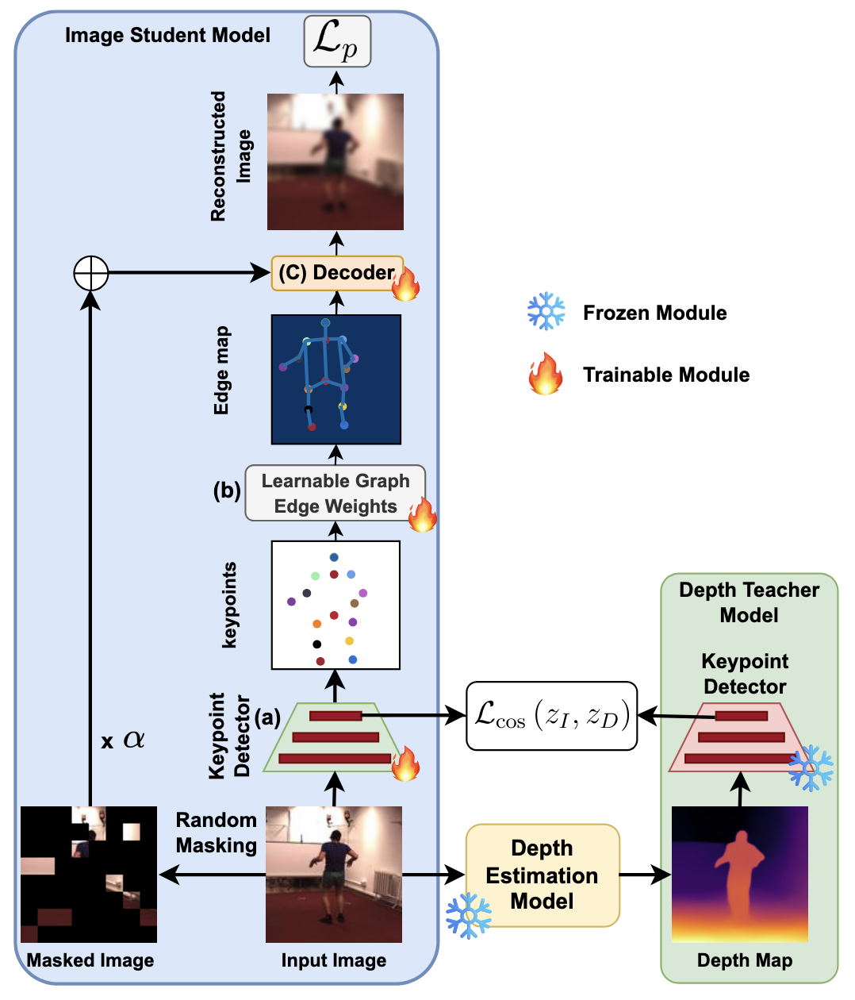

Publications

Depth-Guided Self-Supervised Human Keypoint Detection via Cross-Modal Distillation
ICMV (18th International Conference on Machine Vision, 2025)


SDA-GRIN for Adaptive Spatial-Temporal Multivariate Time Series Imputation
IEEE COMPSAC 2025
YOLO-I3D: Optimizing Inflated 3D Models for Real-Time Human Activity Recognition
Journal of Imaging 10 (11), 269, 2024
Survey: Transformer-based Models in Data Modality Conversion
Under review at ACM Computing Survey
CoBEVFusion: Cooperative Perception with LiDAR-Camera Bird's Eye View Fusion
2024 International Conference on Digital Image Computing: Techniques and Applications (DICTA)
On edge deep learning implementation: approach to achieve 5G
Multimedia Tools and Applications 82 (8), 12229-12243, 2023